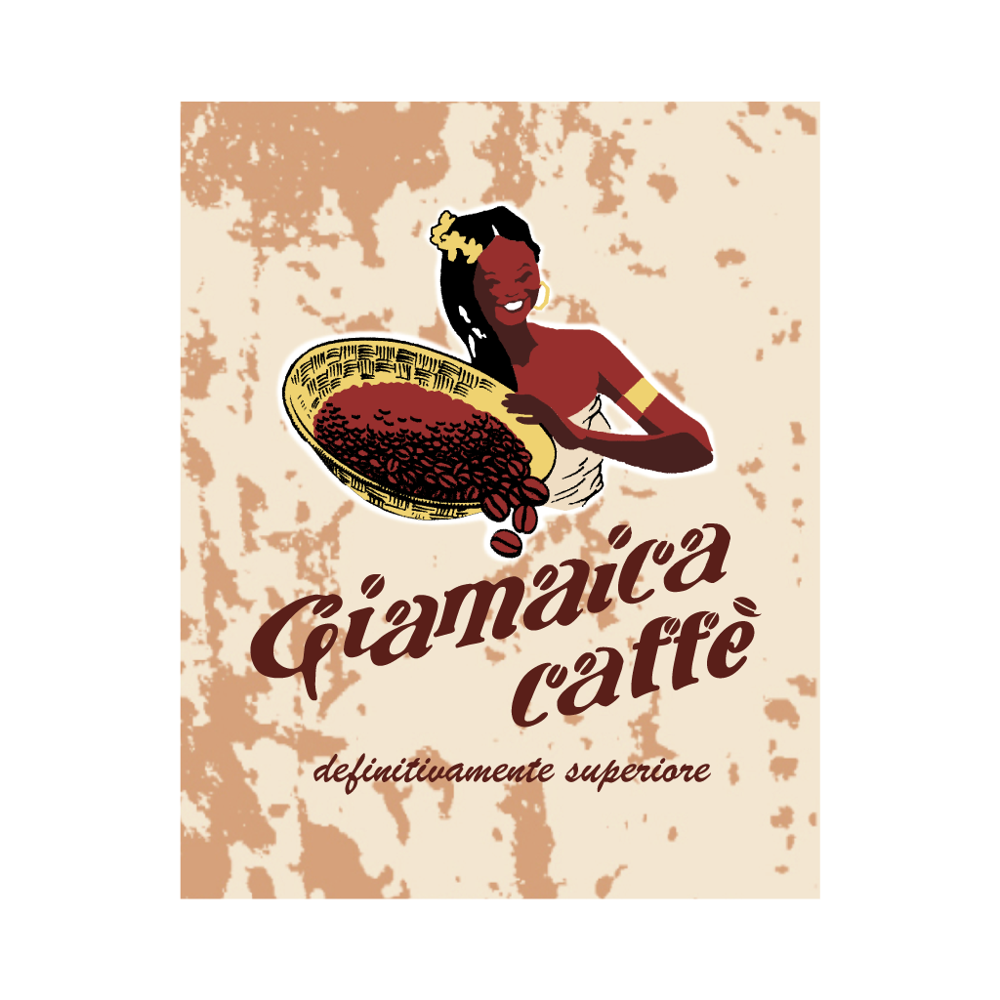

Meunier è un concept innovativo: si tratta di un'enoteca specializzata in vendita e distribuzione di Champagne, attività cui si affianca la ristorazione, incentrata sulla pizza contemporanea e sui prodotti lievitati. I soci fondatori sono due ingegneri e un agronomo che, un po' per gioco, un po' per follia, hanno inseguito un sogno e portato alla luce questo progetto ambizioso nel maggio 2017. Un'impresa faticosa, ma molto gratificante. Pochi mesi dopo l'apertura, infatti, il locale è stato inserito nelle più importanti guide enogastronomiche nazionali e più volte menzionato dalla stampa.
Partendo da farine integrali e semi-integrali macinate a pietra, gli impasti delle pizze sono prodotti con l'utilizzo esclusivo di lievito madre e maturati per almeno 48 ore. Le materie prime utilizzate per la base e la farcitura sono selezionate con curiosità e ponendo la massima attenzione alla qualità, alla genuinità e alla sostenibilità. La pizza viene servita già tagliata in 8 spicchi, per sottolineare la condivisione del cibo e la sua natura conviviale. Dalla nostra apertura, aderiamo al marchio "F.D.P. - Figli di Pasta Madre."

In carta, al momento, sono presenti più di 80 etichette di Champagne frutto di una ricerca puntuale e diretta sul territorio. Sono presenti i vini di alcuni tra i più importanti brand champenoise, e, soprattutto, si mira a premiare e a far conoscere il prezioso lavoro dei tanti piccoli vignaioli che, sul territorio, portano avanti la tradizione familiare con risultati sorprendenti.
Here is some more information about this product that is only revealed once clicked on.
Agronomo, classe 85...
Here is some more information about this product that is only revealed once clicked on.

Meunier - Champagne & Pizza seleziona le materie prime in modo meticoloso e attento. I nostri principali fornitori:





Meunier - Champagne & Pizza è presente nelle più autorevoli guide gastronomiche nazionali.
Il locale si ritaglia, a pieno titolo, uno spazio fra gli indirizzi che in zona meritano la visita. Non solo per la proposta di pizza contemporanea che difficilmente si dimentica, ma anche per le oltre settanta etichette di Champagne adatte a ogni tasca. Farina integrale, pasta madre e lievitazione naturale di circa 48 ore sono i segreti del godibilissimo impasto. I topping, frutto di altrettante attenzioni da parte del pizzaiolo (ex ingegnere) Pietro Marchi, si alternano in menu stagionali e valorizzano il territorio con innovazione. I dischi, cotti in forno elettrico e serviti a spicchi, si rivelano soffici, digeribili e dall’impeccabile alveolatura. Dalla divertente carta vale la pena provare le combinazioni più “audaci”: la Baccalà che abbina l’ingrediente da cui prende il nome a fiordilatte, capperi e cipolla di Cannara, la Lingua di Rubik con fiordilatte, lingua di vitellone, salsa ai peperoni, salsa verde e gelato al peperone del Piquillo, la Gran Torino con fiordilatte, tagliata, salsa donna ta e capperi. Tra gli antipasti da non perdere le fritture, come il supplì “al telefono” (con riso Vialone Nano e caciocavallo Silano) o il Fish and Chips a modo nostro con baccalà, latterino del Trasimeno e patate. Consigliata la prenotazione.
Aggiornamento e ricerca costanti e piede schiacciato sull’acceleratore della qualità, sia per l’impasto che per la selezione sempre originale e stagionale dei topping, sia, infine per l’abbinamento con oltre 70 etichette di Champagne (non a caso il concept è a cura di tre amici sommelier, Anna Chiara Baiocchi, Daniele Marcucci e Pietro Marchi). Pietro, coadiuvato da Guido Brunori, realizza una base con un mix di farina integrale macinata a pietra, e frutto di una lievitazione naturale di circa 48 ore, che la rende eccellente per leggerezza e digeribilità. Gli alveoli, ben presenti lungo il bordo, mostrano una pasta idratata e matura al punto giusto, e la cottura nel forno elettrico le conferisce morbidezza e la corretta percentuale di umidità. La tonda si serve a spicchi, ognuno condito con combinazioni sapienti, di terra e di mare. I classici come la Regina o la burrata e prosciutto) non deludono, così come le nuove creazioni, vedi la Tuorlo Marinato, con fiordilatte, verdure di stagione e tuorlo marinato e la Mica pizza e fichi, con fichi sciroppati e gorgonzola. Completa il menu un ventaglio di antipasti a livello del resto. Prenotare, specie nel fine settimana.
L’apertura di Meunier ha rappresentato per l’Umbria una delle più interessanti novità degli ultimi anni. Qui le pizze gourmet, strada battuta da altri in precedenza, incontrano gli Champagne, grande passione dei giovani proprietari. Ecco quindi fare capolino in questo casale costruito all’interno del perimetro del più grande centro commerciale della regione una carta dei vini di grande intelligenza, per tutte le tasche. La continua crescita delle pizze è dovuta al grande lavoro di ricerca di Pietro Marchi: perfette per lievitazione e cottura, con materie prime mai meno che eccellenti e (bonus) sempre straordinariamente digeribili. Locale moderno e accogliente, servizio attento.
Quando aprì Meunier molti lo considerarono una scommessa per Perugia e dintorni. Ma già poco dopo tutti capirono che offrire pizze gourmet e Champagne non era poi così azzardato. Merito di Pietro Marchi e dei suoi compagni di viaggio: lui appassionato cultore delle lievitazioni, ha avuto ragione nel creare un locale di spiccata raffinatezza. Dagli arredi alla pregevolissima selezione degli Champagne, fino ovviamente alle preparazioni di pizze creative e accattivanti, tutto qui al Menier parla di suggestioni e stimoli gustativi. Le pizze sono “pensate” con cura, ostentano un’architettura mai banale e offrono ingredienti di qualità eccelsa. Dalla cucina anche qualche piccolo spunto di ottima cucina prima di gustarsi gli “spicchi” gourmet. Nel complesso un’esperienza che non lascia mai delusi. Da non perdere il poker di focacce, variamente farcite, assolutamente divine per qualità della lievitazione e sapori.
Una squadra di giovani e appassionati sommelier ha l’intuizione giusta e decide di realizzare la propria scommessa. Pizza gourmet e champagne (con in carta a braccetto grandi maison e piccoli produttori) in un ambiente di design contemporaneo in una casa colonica ristrutturata. E così la pizza di “Meunier” è la perfetta sintesi tra “arte bianca” e cucina: la prima con impasti (farina “Petra” di grano italiano macinato a pietra) lievitati per 48 ore, la seconda a base di materie prime di qualità. Quindi il pizzaiolo Pietro Marchi in tandem con lo chef Guido Brunori faranno giungere in tavola la vitel tono (fiordilatte di Agerola, valeriana, roast beef, salsa tonnata, frutto di cappero= o la Cantabria (burrata pugliese a latte crudo, filetti di alici del Cantabrico, agretti), o ancora la Baccalà (fiordilatte di Agerola, baccalà Gadus morhua, capperini, cipolle rosse di Cannara in agrodolce, pomodori confit, crumble di olive nere). E volendo, per iniziare, ci sono anche antipasti veri e propri come la tartare di Romagnola e il crudo di gamberi rossi di Mazara.
Per una serata tete-a-tete oppure con gli amici per bere bollicine e gustare una fragrante pizza, è il posto giusto. Sotto il faro guida delle blasonate pizzerie tra Verona e Brescia, che hanno rivoluzionato il concetto di pizza, con guarnizioni a base di prodotti pregiati e cucinati, una squadra di giovani appassionati, tutti provenienti dall’Ais ha l’intuizione giusta e decide di realizzare la propria scommessa. Pizza gourmet e Champagne (da grandi maison a piccoli produttori) in un ambiente di design contemporaneo in una colonica ristrutturata. Qui la pizza è la perfetta sintesi tra filosofia rigorosa sugli impasti e cucina: la prima con farine di grano italiano macinato a pietra (al 70% integrali) lievitate per 48 ore, la seconda a base di materie prime di qualità. Il pizzaiolo Pietro Marchi e lo chef Guido Brunori faranno giungere in tavola la Favola (fiordilatte di Agerola, mortadella Gran Riserva Favola in cotenna naturale, Parmigiano Reggiano DOP 24 mesi, aceto balsamico tradizionale DOP di Reggio Emilia, granella di pistacchi), o la Baccalà (fiordilatte di Agerola, baccalà Gadus morhua, capperini, cipolle rosse di Cannara in agrodolce, pomodori confit, crumble di olive nere). E volendo ci sono anche altre pietanze come le tartare di carne o di pesce.
Pizza e Champagne, accoppiata vincente da Meunier, pizzeria gourmet nei pressi di Corciano. Il locale si trova all’interno di un casolare ristrutturato dove andare per l’aperitivo e proseguire fino alla cena, gustando le migliori bollicine, di cantine blasonate come di piacevoli novità tra piccole realtà emergenti, insieme alla pizza in varianti sempre originali e “cucinate”. L’impasto è a base di grani italiani macinati a pietra, per un 70% integrale, lievita per 48 ore prima di essere infornato. In carta anche qualche variante, come il “brutto anatroccolo”, miniburger di jamon, crudi di pesce, cappelletti della tradizione nel periodo natalizio, bue etrusco con mostarda di cedro. Insomma, una proposta che varia e si arricchisce con tante piccole perle di gusto, ingredienti per nuovi originali abbinamenti o per impreziosire le alternative del menu.
Un manipolo di amici si ritrova a cena in un’eponima pizzeria del Veronese dove pizza e cucina hanno allargato i confini del gusto e decide di realizzare “in patria” la propria scommessa: pizza gourmet e Champagne in un ambiente cool. “Vitel tonné”, “baccalà”, “octopus rock”, “Trasimeno” sono alcuni esempi delle loro felici creazioni. In più, i classici.
Un centrato progetto gastronomico dove l’accostamento tra la popolare pizza e l’aristocratico Champagne regala inattesi piaceri gustativi. Oltre 70 etichette di pregiate bollicine in carta da sorseggiare in abbinamento con fantasiose pizze e focacce gourmet farcite con ingredienti di qualità. Qualche esempio: “Cantabria”, “Due piccioni con una fava”, “Trasimeno”.
Pizza e Champagne connubio vincente. Oltre 70 le etichette in questo bel locale che propone in abbinamento alle celebri bollicine francesi le pizze gourmet presentate in tavola tagliate a spicchi. Lievito madre, farina integrale e 48 ore di lievitazione per pizze fragranti e digeribili, farcite con ingredienti stagionali e del territorio, e non solo. I topping vanno dai tradizionali ai più ricercati e audaci. Da non sottovalutare le fritture, i dolci e il caffè di Frasi.
Meunier - Champagne & Pizza è aperto come enoteca dal martedì alla domenica dalle ore 18:30. Il servizio di ristorazione, invece, inizia alle 19:30. Durante la settimana si svolge un unico turno, mentre il venerdì e il sabato due: il primo alle 19:30 (con tavolo da liberare massimo alle 21:15), il secondo dopo le 21:30. È sempre gradita e consigliata la prenotazione. Eventuali allergie e/o intolleranze devono essere comunicate al personale di sala al momento del proprio arrivo.
| GIORNO | APERTURA | CHIUSURA |
|---|---|---|
| Lunedì | - | - |
| Martedì | 18:30 | 23:00 |
| Mercoledì | 18:30 | 23:00 |
| Giovedì | 18:30 | 23:00 |
| Venerdì | 18:30 | 23:00 |
| Sabato | 18:30 | 24:00 |
| Domenica | 18:30 | 23:00 |
TROVACI SU GOOGLE MAPS
place